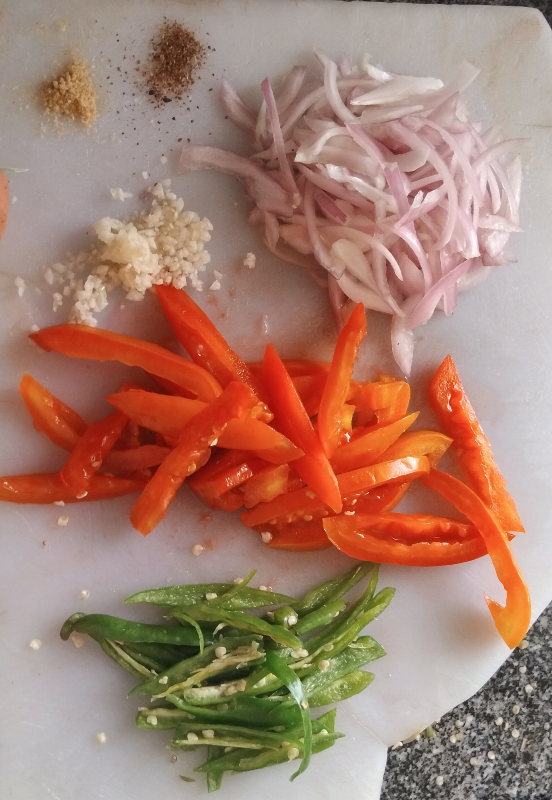

Fasting tibs
Ingredients
- 1 pack soy
- 2 cup water
- 1 tbs pepper
- 3 tbsp oil
- 1 garlic, minced
- 1 tsp salt
- 1 tomato
- 1 green pepper
- 2tsp rosmary

Procedure
- Boil the pack of soy in two cups of water for 5 minutes and strain.
- Roughly chop onion, thinly slice tomato and green pepper and put to the side.
- on a pan, add 2tbs of oil and put on low heat.
- Add the boiled soy and fry gently saute till light brown.
- Then add 2tbs of garlic and stir for a minute.
- Move the soy to the side then add the rest of the oil and 1tbs of pepper and mix it around, then stirr everyrhing together and add the rest of the ingridents: the 2tbs of rosmary, the nicely sliced tomato and finally the tomato.
- Add salt for taste and viola! your vegan tibs is ready to be served.(you can eat it with bread or injera)
Enjoy!